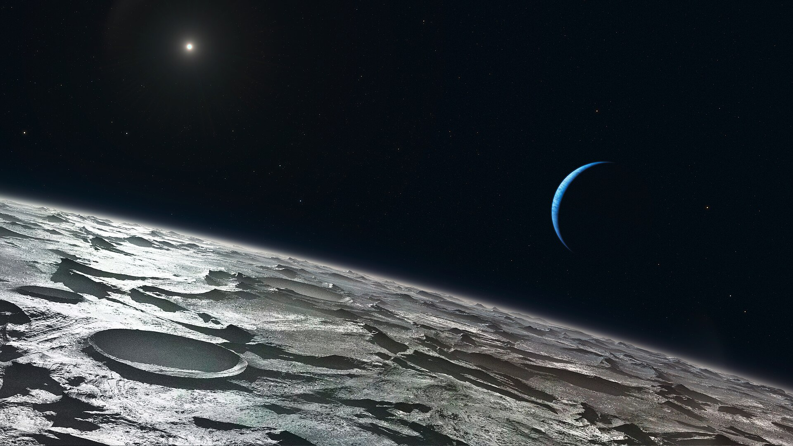
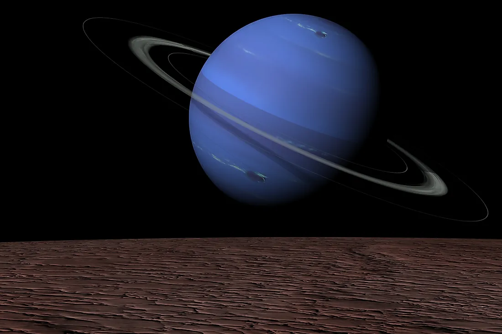
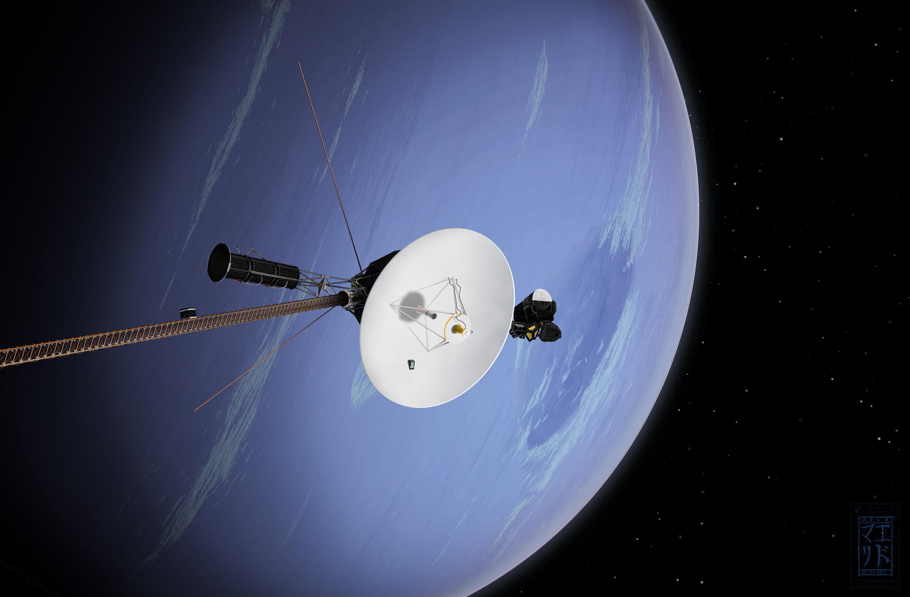

Neptune
Neptune is the eighth and farthest planet from the Sun in the Solar System. Its mass exceeds that of Earth by 17.2 times, ranking third among the planets of the Solar System, and in terms of equatorial diameter, Neptune ranks fourth, exceeding Earth by 3.9 times. The planet is named after Neptune—the Roman god of the seas.

It was discovered on September 23, 1846, becoming the first planet discovered through mathematical calculations. The discovery of unexpected changes in Uranus's orbit led to the hypothesis of an unknown planet, whose gravitational influence they were attributed to. Neptune was found within the predicted orbit. Soon its largest moon Triton was discovered, followed by Nereid in 1949. Neptune has been visited by only one spacecraft, Voyager 2, which flew by the planet on August 24–25, 1989. Through this mission, Neptune's rings and six of its moons were discovered. Other known moons of Neptune were discovered in the 21st century.
Neptune is compositionally similar to Uranus, and both planets differ from the gas giants Jupiter and Saturn. Sometimes Uranus and Neptune are placed in a separate category called "ice giants." Neptune's atmosphere, like that of Jupiter and Saturn, consists mainly of hydrogen and helium, along with traces of hydrocarbons and possibly nitrogen, but it contains a higher proportion of water, ammonia, and methane. The interiors of Neptune and Uranus consist mainly of "ices" and rock. Methane in the outer layers of the atmosphere gives the planet its blue color.
Astronomical Characteristics
Neptune boasts the strongest winds among the planets of the Solar System, with estimated speeds reaching 600 m/s. The temperature of Neptune's upper atmosphere is close to -220°C. In the center of Neptune, the temperature ranges from 5000 K to 7000–7100°C, comparable to the temperature on the surface of the Sun and similar to the internal temperature of most known planets. Neptune has a weak and fragmented ring system, possibly detected as early as the 1960s but conclusively confirmed by Voyager 2 only in 1989.

Neptune's mass (1.02409×10^26 kg) lies between that of Earth and the massive gas giants. Neptune's equatorial radius is 24,764 km, nearly 4 times that of Earth. Neptune and Uranus are often considered a subclass of gas giants called "ice giants" due to their smaller size and different composition (lower concentration of volatile gases). In the search for exoplanets, Neptune is often used as a metonym: discovered exoplanets with similar masses are often called "Neptunes," and astronomers frequently use "Jupiters" as a metonym as well.
The average distance between Neptune and the Sun is 4.55 billion km (30.1 AU), and its orbital period around the Sun is 164.79 years. On July 12, 2011, Neptune completed its first full orbit since its discovery in 1846. Its rotation period around its axis is about 16 hours.
Neptune's Satellites and Rings
Neptune has 16 known satellites, with one of them accounting for over 99.5% of their total mass, and only this one is massive enough to become spheroidal. This is Triton, discovered by William Lassell just 17 days after the discovery of Neptune. Unlike most large moons of planets in the Solar System, Triton has a retrograde orbit. It may have been captured by Neptune's gravity rather than formed in place, and it may have once been a dwarf planet in the Kuiper Belt. It is close enough to Neptune to be in synchronous rotation. Due to tidal acceleration, Triton slowly spirals inward towards Neptune and will eventually be destroyed upon reaching the Roche limit, forming a ring that may be more substantial than Saturn's rings. According to calculations by experts from the Cornell University Center for Radio Physics and Space Research, this will happen in about 3.6 billion or 1.4 billion years, depending on the current location of Triton's Hamiltonian libration. In 1989, Triton's temperature was estimated to be -235°C.
Neptune has a ring system, although much less significant than, for example, Saturn's. The rings may consist of icy particles coated with silicates or carbon-based material, which is most likely responsible for their reddish hue. In 2022, for the first time, clear images of Neptune's rings were obtained in the near-infrared range (wavelengths from 0.6 to 5 μm) using the James Webb Space Telescope. In addition to several narrow bright rings, the images reveal darker dusty rings, many of which have not been seen since the visit of the Voyager 2 probe to the vicinity of Neptune in 1989, as they are poorly visible in the visible light range.
Exploration of Neptune
In 1845–1846, Urbain Le Verrier and independently John Couch Adams conducted calculations, assuming the existence of a new planet in the Solar System. Later, thanks to the efforts of Le Verrier, Neptune was found on September 23, 1846, at the Berlin Observatory. However, a dispute arose between the English and the French over the recognition of the rights to the discovery of Neptune. As a result, it is considered that Adams and Le Verrier were co-discoverers.
In 1989, the Voyager 2 spacecraft made a close flyby of Neptune and its moon Triton, transmitting valuable data back to Earth. The Voyager 2 mission confirmed the existence of Neptune's magnetic field, discovered new moons and the planet's rings, and revealed an extremely active weather system on this remote planet. New space missions are also planned to expand our understanding of Neptune. For example, NASA is developing a mission called "Neptune Odyssey," which involves sending a spacecraft to Neptune. The mission is planned to be launched in 2031, and the spacecraft is expected to arrive at the planet by 2043.